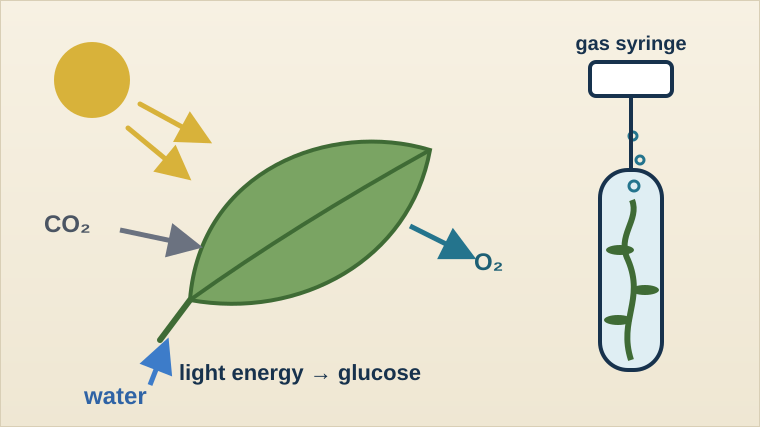

Year 10 Triple Biology
Photosynthesis and plant gas exchange
Explain how plants turn light energy into chemical energy, test what limits the rate of photosynthesis, and investigate how leaves exchange gases.

Lessons
Work through the unit in teaching order. Each lesson has its exam-style questions, reading and any lab or results sheet in its Resources panel.